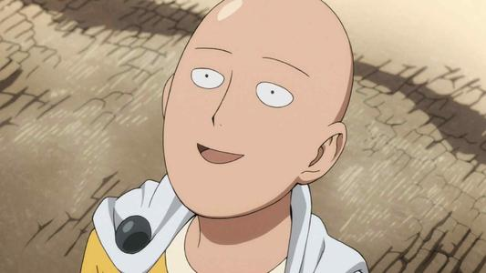
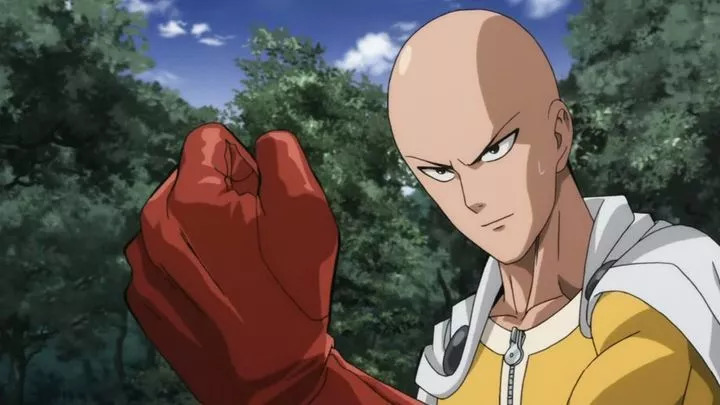
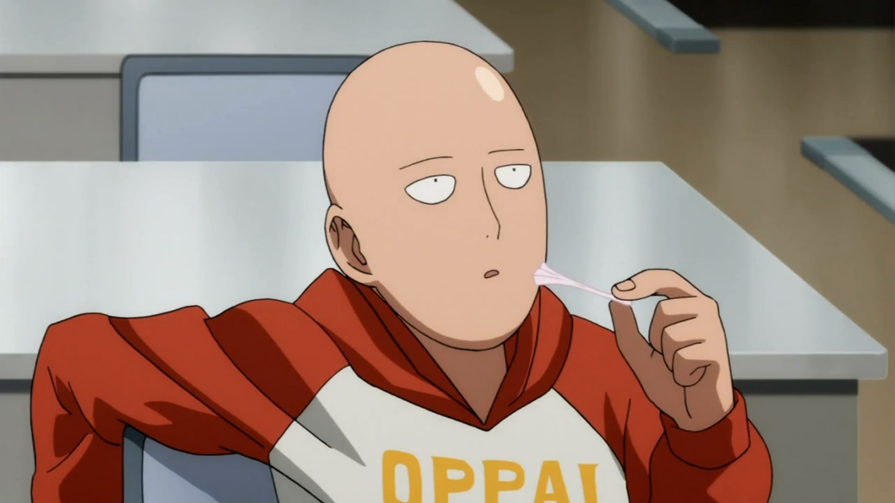

埼玉，英雄名：秃头披风侠。又名一拳超人。日本网络漫画《一拳超人》及衍生同名动画中的男主角。拥有着无法估量的强大实力，力量和速度均处于本作的天花板，远超正式登场的其他所有英雄和怪人。学生时代因为自己的弱小而对自己的未来产生了怀疑。进入社会后，一度陷入失业的颓废状态中，但在与螃蟹人的战斗中，找回了小时候想成为英雄的趣味所在而开始努力锻炼身体（每天100个俯卧撑、100个仰卧起坐、100个深蹲、10公里长跑），并在锻炼身体的过程中击败各式各样的怪人。最终，埼玉拥有了绝对的力量，作为代价他失去了很多（像恐惧之类的感情在不断磨灭，头发掉光）。
每天100个俯卧撑，100个仰卧起坐，100个深蹲，10公里长跑（坚持了3年）以及无论严寒还是酷暑在家均不开空调（实际上是没钱开）的习惯，在坚持一年半后秃头，并有了一拳将敌人杀死的实力。
灯泡一样的光头是其招牌标志，外貌除光头和吊眼的特点外非常普通，没有一点强者该有的性格（因为感情在消失），平时出战喜欢身穿一件带白色斗篷很土的黄色超人套装。
| 敌人 | 战绩 | 战斗过程 |
|---|---|---|
| 疫苗人 | 胜 | >被一拳秒杀 |
| 地底人 | 胜 | >被一脚秒杀 |
| 蚊女 | 胜 | >被一掌拍飞 |
| 阿修罗独角仙 | 胜 | >对手发动阿修罗模式，被对手单方面殴打一段时间后以超市特卖拳反杀。 |
| 深海王 | 胜 | >深海王先出拳，但埼玉后发先至，一拳秒杀。 |
| 波罗斯 | 胜 | >最后被认真殴打的拳风终结 |
| 爆山 | 胜 | >被一拳秒杀 |
| 豪杰 | 胜 | >具体情况不明，被秒杀 |
| 蜈蚣长老 | 胜 | >被认真殴打粉碎 |
个人图片
  